天幕の下に集まった、はぐれ者の一座
十五人ちょうどの一座です。マスカレードのルームは一座の人数ぶんだけ席があるので、この セットで開いた会議には十五人まで入れます。
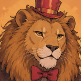
🦁 ライオン
ごろごろ重低音
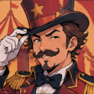
🎩 だんちょう
威厳のある低音
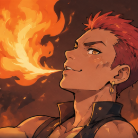
🔥 火吹き男
しゃがれた大声
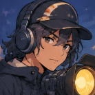
💡 照明係
闇から降ってくる声
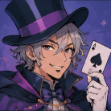
🪄 奇術師
しっとり低め
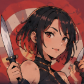
🔪 ナイフ投げ
鋭くとがった声
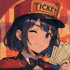
🎫 チケット係
きっちり事務的
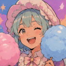
🍭 わたあめ屋
ふわふわ甘い声
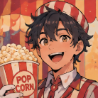
🍿 ポップコーン屋
はずんだ売り声
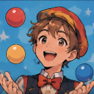
🤹 ジャグラー
軽やかな早口
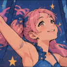
🤸 ブランコ乗り
よく通る高音
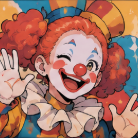
🤡 ピエロ
ふるえる裏声
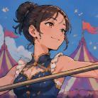
🎪 つなわたり
ふわり高音
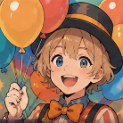
🎈 風船売り
空気の抜けた高い声
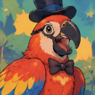
🦜 オウム
かん高いしゃべり
絵は kuboon/masq-circus-set に置いてあります（MIT）。声の作りかたは キャラセットを確かめる で聴けます。